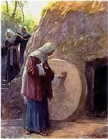

Mark had no tradition of a sealed and guarded tomb, and the women came merely to dress the body, which is far more likely. Luke has the Apostles meeting Jesus in Emmaeus, a suburb of Jerusalem. The difference between Galilee and Jerusalem as the point of meeting may reflect tension between the Christians of Galilee (north) and those of Judea (south). ‘Extension’(MkX) refers to the continuation of the Gospel of Mark added during the Middle Ages. The original ends at Mark 16:8.
Who went to the tomb: Magdalene (Mk, Mt, L, J), Mary mother of James (Mk, Mt, L), Salome (Mk), Joanna (L), Galilean women (L)
What was seen: Stone already rolled away (Mk, L, J), angel rolls back stone (Mt), one man (Mk, Mt), two men (L, J)

What was done: Told he is risen (Mk, Mt, L), they flee (Mk), Jesus appears to Magdalene, then two others, then to the eleven, he gives commission, he ascends (Mk X); Magdalene and “the other Mary” meet him, hold his feet (Mt); the women tell the apostles, who not believe them, Peter runs, sees linen, Jesus appears to Cleopas (Simon?), is not recognized, teaches, is recognized, vanishes, appears to the eleven, eats, gives commission, ascends (L); Magdalene tells John and Peter the body has been taken, they run, see the linen, leave, Magdalene sees Jesus, thinks he is the gardener, recognizes him, told not to touch him, Jesus appears to the eleven, breathes the Holy Ghost on them; eight days later Jesus again appears to Thomas, later appears again, helps them fish (J).
Where are the Apostles to meet Jesus? Galilee (Mk, Mt), Jerusalem (MkX, L, J)
~~~~~~~
The baptismal injunction seems to be from a post-Nicene orthodoxy. Mt 28:16 Then the eleven disciples went away into Galilee, into a mountain where Jesus had appointed them. 28:17 And when they saw him, they worshipped him: but some doubted. 28:18 And Jesus came and spake unto them, saying,
All power is given unto me in heaven and in earth.
28:19 Go ye therefore, and teach all nations, Dan 7:14
baptizing them in the name of the Father, and of the Son, and of the Holy Ghost: 28:20 Teaching them to observe all things whatsoever I have commanded you: and, lo, I am with you alway, even unto the end of the world. Amen.
~~~~~~~